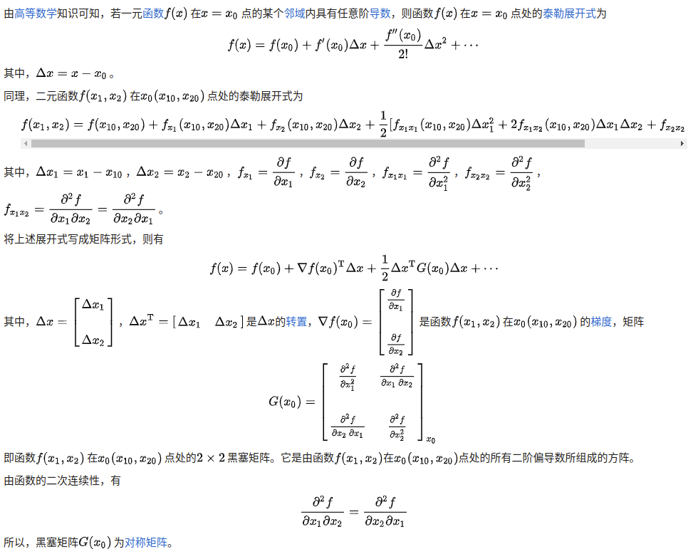

OBS/OBD/GPTQ
本文将系统性介绍GPTQ以及他爹，他爷爷，他太爷爷系列论文。GPTQ是目前极端流行的一个后训练量化算法。本文从他太爷爷开始讲起。
GPTQ使用的方法改进自OBC(Frantar, 2022)，OBC来源于OBS(Hassibi, 1992)，OBS来源于OBD(Lecun, 1990)
这是一种量化、剪枝用的算法
首先OBD是LeCun的论文提出的(1990)：
https://proceedings.neurips.cc/paper/1989/file/6c9882bbac1c7093bd25041881277658-Paper.pdf
然后在之后被应用到了剪枝上，叫OBS(1993)：
https://www.babak.caltech.edu/pubs/conferences/00298572.pdf
Optimal Brain Surgeon and General Network Pruning
首先，回忆下泰勒展开和麦克劳林级数：
对于任意一个函数\(p(x)\)，可以在\(x=0\)处展开为：
\[p(x)=p(0)+p'(0)x+\frac{1}{2}p''(0)x^2+\cdots+\frac{1}{n!}p^{(n)}(0)x^n+o(x^n)\]
也就是当\(x\)的取值在0附近时，\(p(x)\)可以用上述多项式近似。
同理，如果要在其他的点展开，则展开式子为：
\[ \begin{equation} p(x)=p(x_0)+p'(x_0)(x-x_0)+\frac{1}{2}p''(x_0)(x-x_0)^2+...+\frac{1}{n!}p^{(n)}(x_0)(x-x_0)^n+o(x^n) \label{taylor} \end{equation} \]
对于神经网络的损失函数\(E(W;X)\)同样可以展开，按\(\eqref{taylor}\)展开，假定展开处的权重是\(W_0\)，则
\[ E(W)=E(W_0)+{\left ((\frac{\partial E}{\partial W})\bigg|_{W=W_{0}}\right )}^T\cdot (W-W_0)+\frac{1}{2}(W-W_0)^T\cdot \mathbf{H}\cdot (W-W_0)+o(||W-W_0||^3) \]
上式表示权重取值在\(W_0\)附近时的误差的多项式近似值。下文为了表述方便，在书写二阶偏导时，不写\(W=W_{0}\)。移项得到：
\[ E(W)-E(W_0)=(\frac{\partial E}{\partial W})^T\cdot (W-W_0)+\frac{1}{2}(W-W_0)^T\cdot \mathbf{H}\cdot (W-W_0)+o(||W-W_0||^3) \]
将变化量记作\(\Delta\)，则上式变为：
\[ \begin{equation} \Delta E=(\frac{\partial E}{\partial W})^T\cdot \Delta W+\frac{1}{2}\Delta W^T\cdot \mathbf{H}\cdot \Delta W+O(||\Delta W||^3) \label{eq3} \end{equation} \]
其中，\(H\)是hessian矩阵，也就是二阶导组成的矩阵。关于多元函数的泰勒展开，可以参考其他文章，例如：https://zhuanlan.zhihu.com/p/90496291
此处简要说明一下泰勒展开，因为上面那个知乎文章的图片是错误的。
引用自维基百科：https://zh.wikipedia.org/wiki/%E9%BB%91%E5%A1%9E%E7%9F%A9%E9%99%A3#%E6%80%A7%E8%B3%AA
下文涉及到的二阶偏导矩阵用的是\(G(x)\)，实际就是论文中的 \(\mathbf{H}\)essian矩阵

所以，多元函数的泰勒展开式为：
\[ f(x)=f(x_{0})+\nabla f(x_{0})^{\mathrm {T} }\Delta x+{\frac {1}{2}}\Delta x^{\mathrm {T} }G(x_{0})\Delta x+\cdots \]
其中，
\[ \nabla f(x_{0})={\begin{bmatrix}{\frac {\partial f}{\partial x_{1}}}&{\frac {\partial f}{\partial x_{2}}}&\cdots &{\frac {\partial f}{\partial x_{n}}}\end{bmatrix}}_{x_{0}}^{T} \]
为函数\(f(x)\)在\(x_0(x_1,x_2,\cdots,x_n)\)点的梯度，
\[ G(x_{0})={\begin{bmatrix}{\frac {\partial ^{2}f}{\partial x_{1}^{2}}}&{\frac {\partial ^{2}f}{\partial x_{1}\,\partial x_{2}}}&\cdots &{\frac {\partial ^{2}f}{\partial x_{1}\,\partial x_{n}}}\\\\{\frac {\partial ^{2}f}{\partial x_{2}\,\partial x_{1}}}&{\frac {\partial ^{2}f}{\partial x_{2}^{2}}}&\cdots &{\frac {\partial ^{2}f}{\partial x_{2}\,\partial x_{n}}}\\\\\vdots &\vdots &\ddots &\vdots \\\\{\frac {\partial ^{2}f}{\partial x_{n}\,\partial x_{1}}}&{\frac {\partial ^{2}f}{\partial x_{n}\,\partial x_{2}}}&\cdots &{\frac {\partial ^{2}f}{\partial x_{n}^{2}}}\end{bmatrix}}_{x_{0}} \]
将\({\frac {1}{2}}\Delta x^{\mathrm {T} }G(x_{0})\Delta x\)拆解开计算，如下图（为了简便，直接把\(G(x_{0})_{11}\)简写为了\(G_{11}\)
\[ \begin{equation} \begin{aligned} \Delta x^{\mathrm {T} }G(x_{0})\Delta x&= \begin{bmatrix} \Delta x_{1} & \Delta x_{2} & \cdots & \Delta x_{n} \end{bmatrix} \begin{bmatrix} G_{11} & G_{12} & \cdots & G_{1n} \\ G_{21} & G_{22} & \cdots & G_{2n} \\ \vdots & \vdots & \cdots & \vdots \\ G_{n1} & G_{n2} & \cdots & G_{nn} \end{bmatrix} \begin{bmatrix} \Delta x_{1}\\ \Delta x_{2} \\ \vdots \\ \Delta x_{n} \end{bmatrix} \\ &=\Delta x_{1}(\Delta x_{1}G_{11}+\Delta x_{2}G_{21}+\cdots ) + \Delta x_{2}(\Delta x_{1}G_{12}+\Delta x_{2}G_{22}+\cdots ) + \cdots \end{aligned} \label{eq4} \end{equation} \]
其中，\({\frac {1}{2}}\Delta x^{\mathrm {T}
}G(x_{0})\Delta x\)可以分解为两项的和（如上式推导）：
\[
{\frac {1}{2}}\sum_{i=1}^n (\Delta x_i)^2G_{ii} +{\frac {1}{2}}
\sum_{i!=j} \Delta x_i \Delta x_jG_{ij}
\]
代入\(\eqref{eq3}\)，可以得到
\[ \begin{equation} \Delta E=(\frac{\partial E}{\partial W})^T\cdot \Delta W+{\frac {1}{2}}\sum_{i=1}^n (\Delta W_i)^2\mathbf{H}_{ii} +{\frac {1}{2}} \sum_{i!=j} \Delta W_i \Delta W_j\mathbf{H}_{ij} + O(||\Delta W||^3) \end{equation} \]
而在LeCun的OBD中，把交叉项忽略了！OBS没有忽略。
这就是论文OBS中的公式(1)。
OBS的思路是：
剪掉对模型误差影响最小的权重
更新其他权重
剪枝和更新都被表达为对权重施加一个变量\(\Delta W\)
剪枝相当于在当前权重\(W_0\)附近找一个权重\(W\)，该权重将部分元素剪掉，同时error的变化最小，也就是让\(\Delta E\)最小。剪掉\(w_p\)就是令权重矩阵中的权重\(w_p=0\)，相当于\(\Delta w_p+w_p=0\)。每次剪枝一个权重，就相当于找到一个\(\Delta W\)，使得\((\Delta W+W_0)_p=0\)，表达成数学公式就是：
\[ \mathbb{e}^T_q\cdot \Delta W + w_q=0 \]
其中\(e_q\)是单位向量，只有在q的位置是1.
所以优化目标就变成了：
\[ \min_q{\{\min_{\Delta W}(\frac{1}{2}\Delta W^T\cdot \mathbf{H}\cdot \Delta W) | \mathbb{e}^T_q\cdot \Delta W + w_q=0\}} \]
这里忽略了一次项和三次及以上的项。因为训练到局部最优的网络，一阶导数是0(或者接近0，可以忽略不计)，三阶项也忽略。
这就变成了带约束的极值求解问题，用拉格朗日乘子法：
\[ L=\frac{1}{2}\Delta W^T\cdot \mathbf{H}\cdot \Delta W+\lambda (\mathbb{e}^T_q\cdot \Delta W + w_q) \]
求解上式，得到：
\[ \begin{align*} \Delta W&=-\frac{w_q}{\mathbf{H}^{-1}_{qq}}\mathbf{H}^{-1}\cdot e_q \\ &=-\frac{w_q}{\mathbf{H}^{-1}_{qq}}\mathbf{H}^{-1}_{:,q} \\ L_q&=\frac{1}{2}\frac{w_q^2}{\mathbf{H}^{-1}_{qq}} \end{align*} \]
求解过程：
联立方程组求解，使得偏导数为0，求出\(\Delta W\)即可。
\[ \begin{aligned} \frac{\partial L}{\partial \Delta W} & = 0 \\ \frac{\partial L}{\partial \lambda} & = 0 \end{aligned} \]
要求解这个方程组，我们首先求\(\frac{\partial L}{\partial \Delta W}\)。由于本人矩阵论比较烂，不会直接求解矩阵导数，因此我们拆开来看。
我们看对一个元素的导数，\(\frac{\partial L}{\partial \Delta W_{i}}\)。要求解这个问题，先要从\(L=\frac{1}{2}\Delta W^T\cdot \mathbf{H}\cdot \Delta W+\lambda (\mathbb{e}^T_q\cdot \Delta W + w_q)\)中抽取出和\(\Delta W_{i}\)相关的项。
先看前半部分，\(\frac{1}{2}\Delta W^T\cdot \mathbf{H}\cdot \Delta W\)部分。由对公式\(\eqref{eq4}\)的推导，这部分中和\(\Delta W_{i}\)相关的项是：\(\frac{1}{2}\Delta W_{i}^2H_{ii}+\frac{1}{2}\sum_{j!=i}{\Delta W_i W_jH_{ij}}\)，那么这部分对\(\Delta W_{i}\)的导数是：\(H_{ii}W_{i}+\frac{1}{2}\sum_{j!=i}{W_j}H_{ij}\)。
那么现在就剩下后半部分\(\lambda (\mathbb{e}^T_q\cdot \Delta W + w_q)\)，这部分对\(\Delta W_{i}\)的导数实际上恒为0。（读者可以尝试自行分类讨论，\(e_{q_{i}}==1\)时，\(W_q=-\Delta W_i\)，正好是1+(-1)=0，当，\(e_{q_{i}}==0\)时，对\(\Delta W_i\)的导数自然是0）。
那么，求解\(\frac{\partial L}{\partial \Delta W}=0\)，实际上等同于求解一个方程组，该方程组的变量为\((W_0, W_1, \cdots, W_n)\)，表示成系数矩阵形式就是：
\[ \begin{bmatrix} H_{00} & \frac{1}{2}H_{01} & \cdots & \frac{1}{2}H_{0n} \\ \frac{1}{2}H_{10} & H_{11} & \cdots & \frac{1}{2}H_{0n} \\ \vdots & \vdots & \vdots & \vdots \\ \frac{1}{2}H_{n0} & \frac{1}{2}H_{n1} & \cdots & H_{nn} \end{bmatrix} \begin{bmatrix} \Delta W_0 \\ \Delta W_1 \\ \vdots \\ \Delta W_n \end{bmatrix} =0 \]
接下来就是求解该方程组了，至于怎么求解，求解的结果对不对，本人也不知道。
OBS处理流程：
训练好一个收敛到最小误差的神经网络
计算\(\mathbf{H}^{-1}\)
计算所有的\(L_q=\frac{1}{2}\frac{w_q^2}{\mathbf{H}^{-1}_{qq}}\)，如果一个权重的对整体误差E的增加很小，那么该权重就需要被删除，进入step4；否则进行step5
使用step 3中选择到的权重索引q来进行剪枝并更新剩余权重，转到step2
结束剪枝
Optimal Brain Compression: A Framework for Accurate Post-Training Quantization and Pruning
上述OBS方法很好，但是，对于大型语言模型，每个循环都要计算\(\mathbf{H}^{-1}\)，假设矩阵的维度是\(d=d_{row}*d_{col}\)，那么hessian的维度就是\(d*d\)，计算\(\mathbf{H}^{-1}\)的复杂度是\(\Theta(d^3)\)，而整体剪枝的循环轮数是\(O(d)\)（可以理解，权重越多肯定剪枝次数越多，因为一次剪枝一个权重，次数和权重数量正相关），所以整体的算法复杂度就是\(O(d^4)\)。
这样应用到大模型中，显然算法复杂度难以令人接受。所以本文提出了降低复杂度的方法。包括空间和时间复杂度。
The ExactOBS Algorithm 量化误差\(\Delta E=||W_lX_l-\hat{W_l}X_l||_2^2\)，目的是找到让\(\Delta E\)最小的权重的索引，
这里还有个，关于用\(XX^T\)近似二阶导的原因。其实在OBS论文里都有推导，可以看一下原论文第III部分。对于Y=WX，Loss = MSE，可以简化出来二阶导数是XX^T。这里做了一点近似，一个重要的近似就是扰动后的输出和原输出几乎一样。